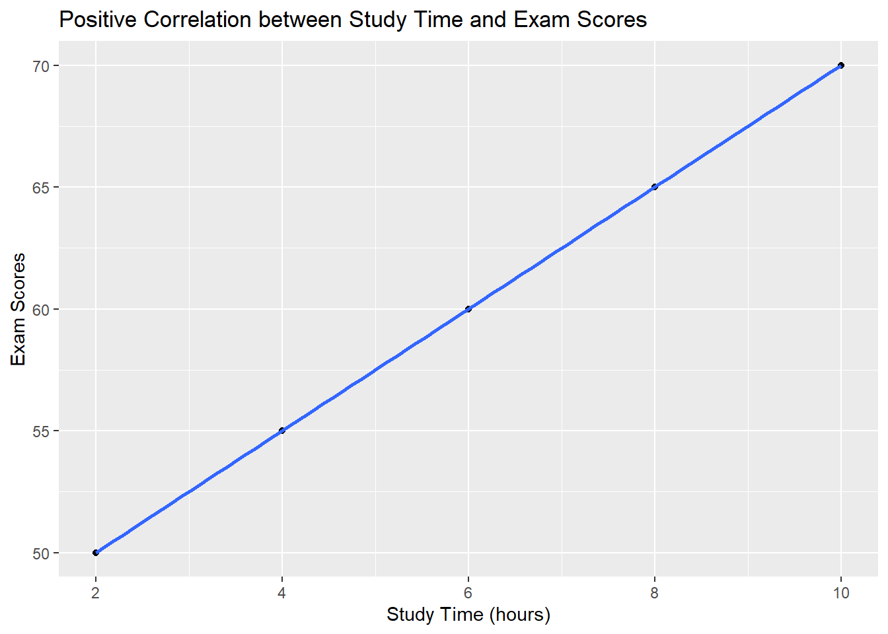
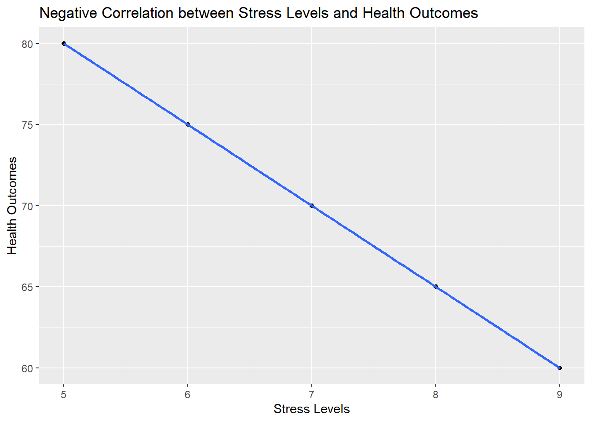
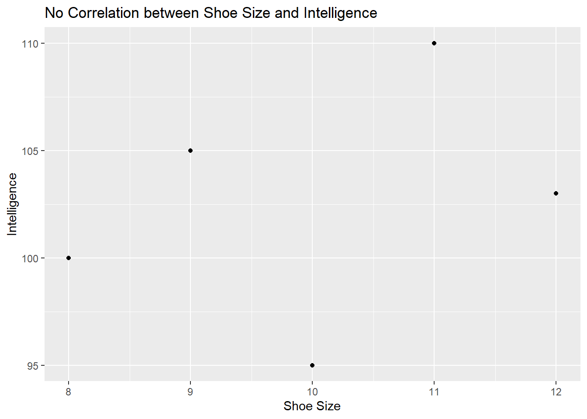
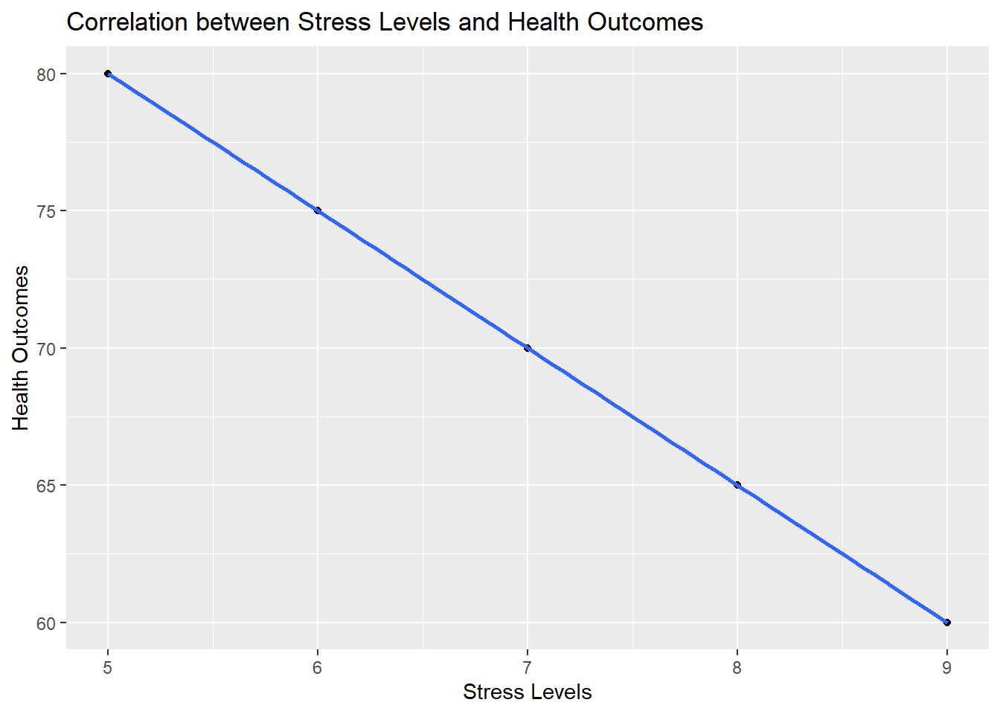
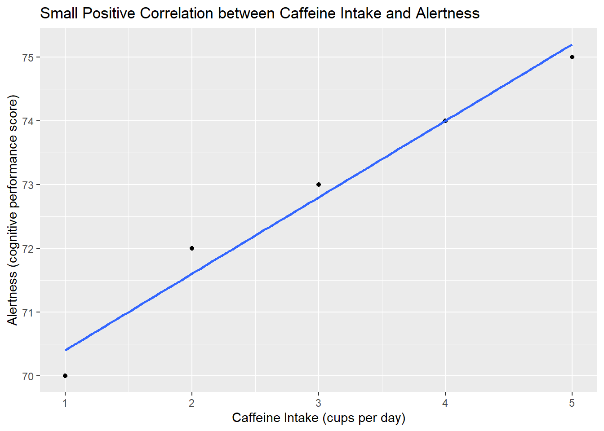
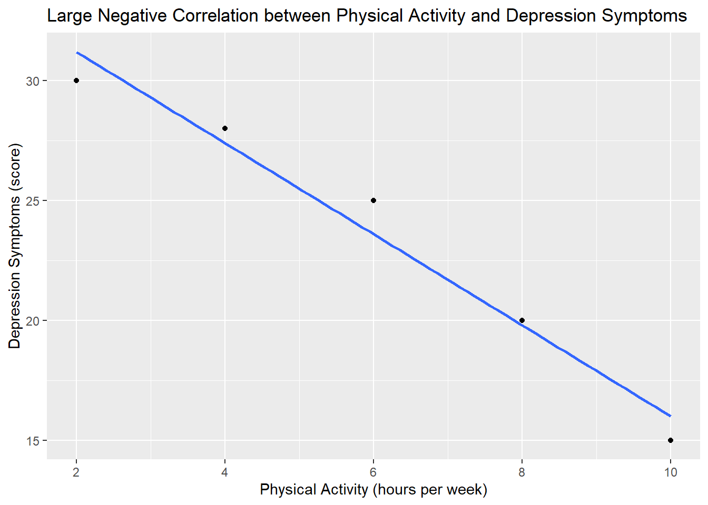

Chapter 9 Correlations
9.1 Introduction to Correlations
9.1.1 What is a Correlation?
Correlation is a fundamental statistical concept that measures the strength and direction of a relationship between two variables. In simpler terms, correlation tells us how closely two variables move in relation to each other. Understanding correlations is crucial in psychological research because it allows researchers to explore potential relationships between variables, such as the connection between stress and health, or study time and test scores.
For example, if you’re investigating whether more study time leads to better exam scores, correlation helps quantify that relationship. If the two variables are correlated, changes in one variable (like study time) are associated with changes in the other variable (like exam scores). Correlations can be positive, negative, or nonexistent (no correlation), depending on how the variables interact.
- Positive Correlation: Both variables increase together.
- Negative Correlation: One variable increases while the other decreases.
- No Correlation: There is no clear relationship between the variables.
9.1.2 Types of Correlation
Positive Correlation
A positive correlation occurs when both variables move in the same direction. In other words, as one variable increases, the other variable also increases. This type of correlation suggests that there is a direct relationship between the two variables.
Example: Imagine you are studying the relationship between the number of hours a student spends studying and their exam score. If there is a positive correlation, students who spend more hours studying tend to have higher exam scores. This is a common scenario in educational psychology, where more effort (study time) is often associated with better outcomes (exam scores).
Visual Representation Using a Scatter Plot in R with ggplot2
You can visualize a positive correlation using a scatter plot, which shows individual data points plotted on an X (independent variable) and Y (dependent variable) axis. In R, you can use the ggplot2 package to create this visualization.
R Code Example:
# Load the ggplot2 package
library(ggplot2)
# Sample data: study time and exam scores
study_time <- c(2, 4, 6, 8, 10)
exam_scores <- c(50, 55, 60, 65, 70)
# Create a scatter plot with a trend line
ggplot(data = data.frame(study_time, exam_scores), aes(x = study_time, y = exam_scores)) +
geom_point() +
geom_smooth(method = "lm", se = FALSE) +
labs(title = "Positive Correlation between Study Time and Exam Scores", x = "Study Time (hours)", y = "Exam Scores")## `geom_smooth()` using formula = 'y ~ x'
In this example, the scatter plot would show that as study time increases, exam scores also increase, indicating a positive correlation.
Negative Correlation
A negative correlation occurs when one variable increases while the other decreases. This type of correlation suggests an inverse relationship between the two variables.
Example: Consider the relationship between stress levels and health outcomes. If there is a negative correlation, as stress levels increase, health outcomes decrease. This relationship is often observed in health psychology, where higher stress is associated with poorer health.
Visual Representation Using a Scatter Plot in R with ggplot2
To visualize a negative correlation, you can use a scatter plot similar to the one used for positive correlation, but the trend line will slope downwards, indicating the inverse relationship.
R Code Example:
# Sample data: stress levels and health outcomes
stress_levels <- c(5, 6, 7, 8, 9)
health_outcomes <- c(80, 75, 70, 65, 60)
# Create a scatter plot with a trend line
ggplot(data = data.frame(stress_levels, health_outcomes), aes(x = stress_levels, y = health_outcomes)) +
geom_point() +
geom_smooth(method = "lm", se = FALSE) +
labs(title = "Negative Correlation between Stress Levels and Health Outcomes", x = "Stress Levels", y = "Health Outcomes")## `geom_smooth()` using formula = 'y ~ x'
In this plot, as stress levels increase, health outcomes decrease, reflecting a negative correlation.
No Correlation
No correlation means there is no apparent relationship between the two variables. In such cases, changes in one variable do not predict or are not associated with changes in the other variable.
Example: A classic example of no correlation is the relationship between shoe size and intelligence. These two variables are unrelated, so knowing someone’s shoe size gives you no information about their intelligence level.
Visual Representation Using a Scatter Plot in R with ggplot2
When there is no correlation, a scatter plot will show data points scattered randomly without any discernible pattern or trend.
R Code Example:
# Sample data: shoe size and intelligence
shoe_size <- c(8, 9, 10, 11, 12)
intelligence <- c(100, 105, 95, 110, 103)
# Create a scatter plot
ggplot(data = data.frame(shoe_size, intelligence), aes(x = shoe_size, y = intelligence)) +
geom_point() +
labs(title = "No Correlation between Shoe Size and Intelligence", x = "Shoe Size", y = "Intelligence")
In this plot, you would see a random scatter of points with no clear trend, indicating no correlation.
Understanding these types of correlations is essential for interpreting relationships between variables in psychological research. Whether exploring positive, negative, or no correlations, these insights help researchers better understand how variables interact and inform subsequent research or interventions.
9.2 Calculating Correlation in R
When exploring relationships between variables, one of the most straightforward and powerful tools is correlation. Correlation allows you to quantify the degree to which two variables are related. In this section, we’ll introduce Pearson’s correlation coefficient, walk you through how to calculate it in R, and show you how to visualize these relationships using ggplot2.
9.2.1 Pearson’s Correlation Coefficient
Introduction to Pearson’s Correlation Coefficient (r)
Pearson’s correlation coefficient, often denoted as r, is the most common measure of linear correlation between two variables. It gives you a single number that tells you how strongly two variables are related and the direction of that relationship. The beauty of Pearson’s r is that it’s easy to calculate and interpret, making it a go-to tool in psychological research.
Imagine you’re curious about the relationship between the amount of time students spend studying and their exam scores. Are students who study more likely to score higher? Pearson’s r will help you answer this question by quantifying the relationship between these two variables.
Explanation of the Range of r Values
Pearson’s r ranges from -1 to +1, and this range tells you a lot:
r = +1: Perfect positive correlation. As one variable increases, the other variable increases in perfect harmony. For example, if you increase study time by 1 hour, exam scores increase by a fixed amount every time.
r = -1: Perfect negative correlation. As one variable increases, the other decreases in perfect opposition. For example, as stress levels increase, health outcomes decrease in a perfectly predictable way.
r = 0: No correlation. There’s no linear relationship between the two variables. Changes in one variable do not predict changes in the other.
9.2.2 Step-by-Step Guide to Calculating Correlation in R
Calculating Pearson’s r in R is straightforward, and it only requires a single function: cor(). Let’s walk through a simple example to illustrate how to do this.
Example: Calculating the Correlation Between Study Time and Exam Scores
Imagine you have data on how many hours a group of students spent studying for an exam and their corresponding exam scores. You want to see if there’s a relationship between the two.
R Code Example:
# Sample data
study_time <- c(2, 4, 6, 8, 10)
exam_scores <- c(50, 55, 60, 65, 70)
# Calculate Pearson's correlation coefficient
correlation <- cor(study_time, exam_scores)
correlation## [1] 1Interpretation: In this case, the correlation coefficient is 1, indicating a perfect positive correlation. This means that as study time increases, exam scores increase proportionally. It’s important to note that in real-world data, perfect correlations are rare, and this example is simplified to illustrate the concept.
9.2.3 Visualizing Correlation with ggplot2
Numbers are informative, but visualizing data can often provide additional insights. Scatter plots are a great way to see the relationship between two variables. In R, you can use the ggplot2 package to create these visualizations, adding a trend line to better understand the correlation.
Example: Visualizing the Correlation Between Stress Levels and Health Outcomes
Suppose you’re examining the relationship between stress levels and health outcomes. You suspect that as stress increases, health outcomes decrease, indicating a negative correlation. Let’s visualize this relationship.
R Code Example:
# Load the ggplot2 package
library(ggplot2)
# Sample data
stress_levels <- c(5, 6, 7, 8, 9)
health_outcomes <- c(80, 75, 70, 65, 60)
# Create scatter plot with trend line
ggplot(data = data.frame(stress_levels, health_outcomes), aes(x = stress_levels, y = health_outcomes)) +
geom_point() +
geom_smooth(method = "lm", se = FALSE) +
labs(title = "Correlation between Stress Levels and Health Outcomes", x = "Stress Levels", y = "Health Outcomes")## `geom_smooth()` using formula = 'y ~ x'
Interpretation: The scatter plot will show individual data points, with stress levels on the x-axis and health outcomes on the y-axis. The trend line, added using geom_smooth(), will slope downward, illustrating the negative correlation between stress and health. This visualization makes it clear that as stress increases, health outcomes tend to decrease.
In this section, we’ve explored how to calculate and visualize correlations in R. Understanding these concepts and tools is essential for anyone looking to analyze relationships between variables, making it a cornerstone of psychological research. Whether you’re interested in the connection between study habits and academic success or the impact of stress on health, correlations provide a valuable lens through which to explore these relationships.
9.3 Understanding the Size of Effect
In addition to knowing whether a correlation exists between two variables, it’s equally important to understand the strength of that correlation. The size of the correlation coefficient (r) not only tells you about the existence of a relationship but also about its magnitude and potential impact. This understanding is crucial in psychological research, where even small correlations can be meaningful in certain contexts, while large correlations might indicate strong, potentially impactful relationships.
9.3.1 Interpreting the Size of Correlation
Explanation of How the Size of the Correlation Coefficient (r) Reflects the Strength of the Relationship Between Variables
The value of Pearson’s correlation coefficient (r) not only indicates the direction of the relationship (positive or negative) but also its strength. Here’s how to interpret different ranges of r values:
- Small Correlation: \(0.1 \leq |r| < 0.3\)
- A small correlation suggests a weak relationship between the variables. While the variables are related, the connection is subtle, and other factors may also play significant roles.
- Practical Significance: In psychological research, small correlations can still be important. For example, if you find a small positive correlation between caffeine intake and alertness, it suggests that while caffeine does boost alertness, the effect is mild and may be influenced by other factors such as individual tolerance or time of day.
- Medium Correlation: \(0.3 \leq |r| < 0.5\)
- A medium correlation indicates a moderate relationship between the variables. The connection is more apparent, and changes in one variable are somewhat predictive of changes in the other.
- Practical Significance: Medium correlations are often meaningful in psychology. For instance, a medium negative correlation between social media use and self-esteem might suggest that as social media use increases, self-esteem tends to decrease, with a more noticeable impact compared to a small correlation.
- Large Correlation: \(|r| \geq 0.5\)
- A large correlation suggests a strong relationship between the variables. Changes in one variable are closely associated with changes in the other, indicating a significant and robust connection.
- Practical Significance: Large correlations are particularly impactful in psychological research. For example, a large negative correlation between physical activity and depression symptoms would suggest that higher levels of physical activity are strongly associated with lower levels of depression, potentially guiding interventions and public health strategies.
Understanding the size of the correlation helps researchers determine the practical implications of their findings. While statistical significance tells us whether a relationship exists, the effect size—reflected by the magnitude of r—tells us how meaningful that relationship is in real-world terms.
9.3.2 Examples of Effect Size in Correlation
Let’s explore some concrete examples to better understand how the size of correlation impacts psychological research.
Example 1: A Small Positive Correlation Between Caffeine Intake and Alertness
Suppose you conduct a study to investigate the relationship between caffeine intake (measured in cups of coffee per day) and alertness (measured by a cognitive performance score). You find a small positive correlation, \(r = 0.2\).
- Interpretation: This small correlation suggests that as caffeine intake increases, there is a slight increase in alertness. However, the relationship is weak, indicating that other factors likely influence alertness more strongly than caffeine intake alone.
- Practical Significance: In practical terms, while caffeine might give a slight boost to alertness, the effect is modest. This finding might suggest that other interventions or lifestyle changes could have a more significant impact on cognitive performance.
Visual Representation in R Using ggplot2
R Code Example:
library(ggplot2)
# Sample data: caffeine intake and alertness
caffeine_intake <- c(1, 2, 3, 4, 5)
alertness <- c(70, 72, 73, 74, 75)
# Create scatter plot with trend line
ggplot(data = data.frame(caffeine_intake, alertness), aes(x = caffeine_intake, y = alertness)) +
geom_point() +
geom_smooth(method = "lm", se = FALSE) +
labs(title = "Small Positive Correlation between Caffeine Intake and Alertness", x = "Caffeine Intake (cups per day)", y = "Alertness (cognitive performance score)")## `geom_smooth()` using formula = 'y ~ x'
Example 2: A Large Negative Correlation Between Physical Activity and Depression Symptoms
Now, consider a study examining the relationship between physical activity (measured in hours per week) and depression symptoms (measured by a standardized depression score). You find a large negative correlation, \(r = -0.6\).
- Interpretation: This large correlation suggests a strong inverse relationship: as physical activity increases, depression symptoms decrease significantly. The strength of this relationship indicates that physical activity is a key factor in reducing depression symptoms.
- Practical Significance: In a real-world context, this finding could have substantial implications for public health interventions aimed at reducing depression. Encouraging physical activity could be a highly effective strategy for improving mental health.
Visual Representation in R Using ggplot2
R Code Example:
# Sample data: physical activity and depression symptoms
physical_activity <- c(2, 4, 6, 8, 10)
depression_symptoms <- c(30, 28, 25, 20, 15)
# Create scatter plot with trend line
ggplot(data = data.frame(physical_activity, depression_symptoms), aes(x = physical_activity, y = depression_symptoms)) +
geom_point() +
geom_smooth(method = "lm", se = FALSE) +
labs(title = "Large Negative Correlation between Physical Activity and Depression Symptoms", x = "Physical Activity (hours per week)", y = "Depression Symptoms (score)")## `geom_smooth()` using formula = 'y ~ x'
These examples highlight how understanding the size of correlation can inform the practical implications of research findings. While a small correlation might suggest a subtle influence, a large correlation often points to a more significant, actionable relationship. In psychological research, where the goal is often to improve well-being, understanding these nuances is crucial for designing effective interventions and making informed decisions.
9.4 The Directionality and Symmetry of Correlation
9.4.1 No Directionality in Correlation
Explanation That Correlation Does Not Imply Directionality
One of the key limitations of correlation is that it doesn’t imply directionality. This means that while a correlation can tell you that two variables are related, it doesn’t tell you which variable influences the other. The relationship could be bidirectional, or it could be influenced by another variable altogether (which we’ll discuss in more detail later).
For example, consider the relationship between stress and sleep quality. You might find a negative correlation between these two variables, indicating that as stress levels increase, sleep quality decreases. However, this correlation doesn’t tell you whether stress causes poor sleep or whether poor sleep leads to increased stress—or if there is a bidirectional relationship where both factors influence each other.
Example: Stress and Sleep Quality
Let’s look at an example to illustrate this concept. Imagine you’re studying the relationship between stress and sleep quality, and you’ve collected the following data:
# Sample data
stress <- c(7, 6, 5, 4, 3)
sleep_quality <- c(60, 65, 70, 75, 80)
# Calculate correlation in both directions
cor(stress, sleep_quality)## [1] -1## [1] -1Interpretation: In this example, the correlation between stress and sleep quality is -1, indicating a perfect negative correlation. However, note that the correlation value is the same regardless of whether stress is considered the independent variable and sleep quality the dependent variable or vice versa. This demonstrates that the order in which you analyze the variables does not affect the correlation value—highlighting the lack of directionality in correlation.
9.4.2 Symmetry of Correlation
Discussion on the Symmetry of Correlation: r(X, Y) = r(Y, X)
Another important characteristic of correlation is its symmetry. The correlation coefficient, r, is symmetric, meaning that the correlation between X and Y is the same as the correlation between Y and X. This symmetry reinforces the idea that correlation does not establish a cause-and-effect relationship; it only indicates that two variables are related.
For example, if you find that the correlation between physical activity (X) and mood (Y) is 0.6, you can be confident that the correlation between mood (Y) and physical activity (X) will also be 0.6. This symmetry is fundamental to the nature of correlation and further emphasizes that correlation alone cannot tell us about the direction of the relationship.
Examples in Psychological Research Where This Concept Is Relevant
Symmetry in correlation is particularly relevant in psychological research where relationships between variables are often complex and multidirectional. For instance:
- Physical Activity and Mood: Research often shows a positive correlation between physical activity and mood, but the symmetry of correlation means we can’t conclude whether increased physical activity leads to better mood or whether individuals in a better mood are more likely to engage in physical activity—or if both are true.
- Self-Esteem and Academic Performance: Another example might be the correlation between self-esteem and academic performance. A positive correlation might exist, but the symmetry of correlation tells us that we can’t determine whether higher self-esteem leads to better academic performance, or if better academic performance boosts self-esteem—or again, whether both are influencing each other.
9.5 Issues with Correlations
While correlations are powerful tools for exploring relationships between variables, they come with several limitations that researchers must be aware of. In this section, we’ll discuss three key issues: the third variable problem (confounders), the directionality problem, and the fact that correlation does not imply causality.
9.5.1 The Third Variable Problem (Confounders)
Explanation of How a Third Variable Can Influence Both Variables in a Correlation, Leading to a Spurious Relationship
One of the biggest challenges with interpreting correlations is the third variable problem, also known as confounding. A third variable, or confounder, is an unmeasured variable that influences both of the variables being studied, creating a spurious (false) relationship between them.
For example, consider the observed correlation between ice cream sales and drowning rates. At first glance, one might think that increased ice cream sales lead to more drownings. However, the real explanation is that a third variable—temperature—is influencing both variables. Hot weather leads to both increased ice cream sales and more people swimming, which in turn increases the risk of drowning. This third variable, temperature, is the true cause of the observed relationship.
Importance of Considering Potential Confounders in Psychological Research
In psychological research, failing to account for potential confounders can lead to incorrect conclusions. For instance, if you observe a correlation between parenting style and child academic performance, it’s crucial to consider other factors, such as socioeconomic status or parental education level, that might influence both variables. Without accounting for these confounders, the observed correlation could be misleading.
9.5.2 Directionality Problem
Discussion of the Directionality Problem in Correlation: Correlation Does Not Imply Causation
Another major limitation of correlation is the directionality problem. Even if two variables are strongly correlated, this does not mean that one causes the other. Correlation simply indicates that the variables are related, but it does not provide information about the direction of the relationship.
Example: Sleep Quality and Academic Performance
Consider a study that finds a correlation between sleep quality and academic performance. Does poor sleep lead to lower academic performance, or does academic stress lead to poor sleep quality? The correlation alone cannot answer this question, highlighting the directionality problem.
9.5.3 Correlation Does Not Imply Causality
Emphasis on the Fact That Even a Strong Correlation Does Not Prove That One Variable Causes the Other
It’s crucial to remember that even a strong correlation does not imply causality. A strong correlation simply indicates a strong relationship between two variables, but it doesn’t tell you why the relationship exists.
Example: Social Media Use and Anxiety
Consider the correlation between social media use and anxiety. Studies often find a positive correlation, suggesting that higher social media use is associated with higher levels of anxiety. However, this correlation does not mean that social media use causes anxiety. It’s possible that individuals with higher anxiety levels are more likely to use social media as a way to cope, or that both social media use and anxiety are influenced by a third variable, such as loneliness or low self-esteem.
Explanation of Why Experimental Methods Are Necessary to Establish Causality
To establish causality, researchers must use experimental methods, such as randomized controlled trials, where one variable is manipulated to observe its effect on another. For example, to determine whether sleep quality affects academic performance, you could design an experiment where participants are randomly assigned to different sleep conditions and then measure their academic performance.
By understanding these issues with correlation, researchers can use this statistical tool more effectively and avoid common pitfalls that can lead to incorrect conclusions.
9.6 Chapter Summary
9.6.1 Recap of Key Concepts
In this chapter, we explored the concept of correlation, a fundamental tool in psychological research for understanding relationships between variables. We began by defining correlation and discussing the three main types:
- Positive Correlation: Both variables move in the same direction; as one increases, the other also increases.
- Negative Correlation: The variables move in opposite directions; as one increases, the other decreases.
- No Correlation: There is no discernible relationship between the two variables.
We then delved into the importance of understanding the size of correlation, represented by Pearson’s correlation coefficient (r). The magnitude of r helps researchers assess the strength of the relationship, with small, medium, and large correlations providing different levels of insight into how closely two variables are related.
Next, we discussed the directionality and symmetry of correlation, emphasizing that correlations do not imply causality and are symmetric—meaning the correlation between X and Y is the same as that between Y and X.
Finally, we highlighted the key issues associated with correlations:
- The Third Variable Problem: Unaccounted-for confounding variables can create spurious relationships.
- Directionality Problem: Correlation does not tell us which variable influences the other.
- Correlation Does Not Imply Causality: Even strong correlations do not prove causation; further research is needed to establish causal links.
9.6.2 Final Thoughts
Correlations are a valuable exploratory tool in psychological research. They allow researchers to identify potential relationships between variables, providing a starting point for deeper investigation. However, it is crucial to interpret correlations with caution, keeping in mind their limitations. Understanding the issues of directionality, third variables, and the fact that correlation does not imply causality is essential for drawing accurate and meaningful conclusions from data.
As you apply correlation in your research, remember to use it as a guide for further exploration rather than as definitive proof of a relationship. By combining correlations with other research methods, you can build a more comprehensive understanding of the complex relationships between variables in psychological research.
9.7 Practice Exercises
9.7.1 Exercise 1: Calculate and Interpret the Pearson Correlation Coefficient for a Sample Dataset in R
Scenario: You have collected data on the number of hours students spend studying and their corresponding exam scores. The data is as follows:
- Study Hours:
c(2, 4, 6, 8, 10) - Exam Scores:
c(50, 55, 60, 65, 70)
Tasks:
1. Calculate the Pearson correlation coefficient using R.
2. Interpret the correlation coefficient in the context of the relationship between study hours and exam scores.
9.7.2 Exercise 2: Create a Scatter Plot with ggplot2 to Visualize the Correlation Between Two Variables and Add a Trend Line
Scenario: Using the same data from Exercise 1, visualize the relationship between study hours and exam scores.
Tasks:
1. Create a scatter plot using ggplot2 in R.
2. Add a trend line to the scatter plot to show the direction and strength of the correlation.
9.7.3 Exercise 3: Analyze the Size of the Correlation and Discuss Its Practical Significance in a Psychological Context
Scenario: Suppose you calculated the Pearson correlation coefficient between two variables (e.g., study hours and exam scores) and found \(r = 0.8\).
Tasks:
1. Interpret the size of the correlation.
2. Discuss the practical significance of this correlation in a psychological context (e.g., the impact of study habits on academic performance).
9.7.4 Exercise 4: Discuss the Potential Impact of a Third Variable on a Given Correlation Scenario and Suggest Ways to Control for It
Scenario: You find a correlation between the number of hours spent on social media and levels of anxiety. However, you suspect that a third variable, such as loneliness, might be influencing both.
Tasks:
1. Discuss how loneliness could be a confounding variable affecting both social media use and anxiety levels.
2. Suggest ways to control for this third variable in future research (e.g., using statistical controls or experimental design).
9.7.5 Exercise 5: Evaluate a Correlation Study and Discuss Why Correlation Does Not Imply Causality, Using Specific Examples from the Chapter
Scenario: A study finds a strong positive correlation between time spent watching TV and obesity rates. However, the study does not explore causality.
Tasks:
1. Discuss why the correlation between TV watching and obesity does not necessarily imply that watching TV causes obesity.
2. Provide specific examples from the chapter that illustrate the limitations of correlation in establishing causality.